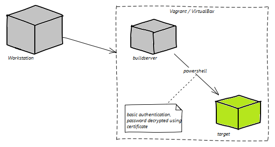

{{ message }}
By using the included Vagrant file, a quickstart environment can be created from the CDAF package.
Requires Windows 7 SP1 / Windows Server 2008 R2 or above. For Windows 7 SP1 or Windows Server 2008 R2, additional prerequisite of Windows Management Framework v3 or above, and .NET 4 or above. To support loopback testing on localhost, enable Remote PowerShell (WinRM)
Create a workspace, download and extract CDAF to the root of the workspace. For Visual Studio, the root will be the solution root. For Eclispe, this is the Eclispe workspace root.
To validate the download framework, open an elevated powershell session and navigate to the workspace.
. { iwr -useb http://cdaf.io/static/app/downloads/cdaf.ps1 } | iex
.\automation\provisioning\runner.bat .\automation\remote\capabilities.ps1
Initialise the solution run the emulator
mkdir automation-solution
cp .\automation\solution\CDAF.solution .\automation-solution
.\automation\cdEmulate.bat
Create a build task in the a project directory (name is Project in this example)
mkdir Project
echo 'REMOVE bin' > Project/build.tsk
echo 'EXITIF $ACTION -eq "clean"' >> Project/build.tsk
echo '# Following will be executed when ACTION is clean' >> Project/build.tsk
echo 'PROPLD ../$SOLUTIONROOT/CDAF.solution' >> Project/build.tsk
.\automation\cdEmulate.bat
Once the Project Build is validated, gather the resulting artefacts for packaging. Create a the artefact definition file in your solution.
echo '# Placeholder File for TasksLocal' > automation-solution/storeForRemote
.\automation\cdEmulate.bat
Copy and add the target definitions (Windows, Workgroup and Vagrant) to the solution and define a task to perform on the target.
cp ./automation/solution/propertiesForLocalTasks ./automation-solution -Recurse
echo 'dir' > automation-solution/tasksRunLocal.tsk
echo 'dir' > automation-solution/tasksRunRemote.tsk
.\automation\cdEmulate.bat
This can only be used for on-domain hosts. One-off provisioning for "remote" connection to localhost.
winrm quickconfig
.\automation\provisioning\runner.bat .\automation\provisioning\CredSSP.ps1 client
Similar to local artefacts, create a remote artefacts definition file.
echo '# Placeholder File will trigger zip file creation from TasksRemote' > automation-solution/storeForRemote.
.\automation\cdEmulate.bat
Copy and add the target definitions (Windows and Vagrant only) to the solution and define a task to perform on the target.
cp ./automation/solution/propertiesForRemoteTasks ./automation-solution -Recurse
echo 'dir' > automation-solution/tasksRunRemote.tsk
.\automation\cdEmulate.bat
Simple imcrimental script runner (requires .NET 4 or above).
{% endblock %}